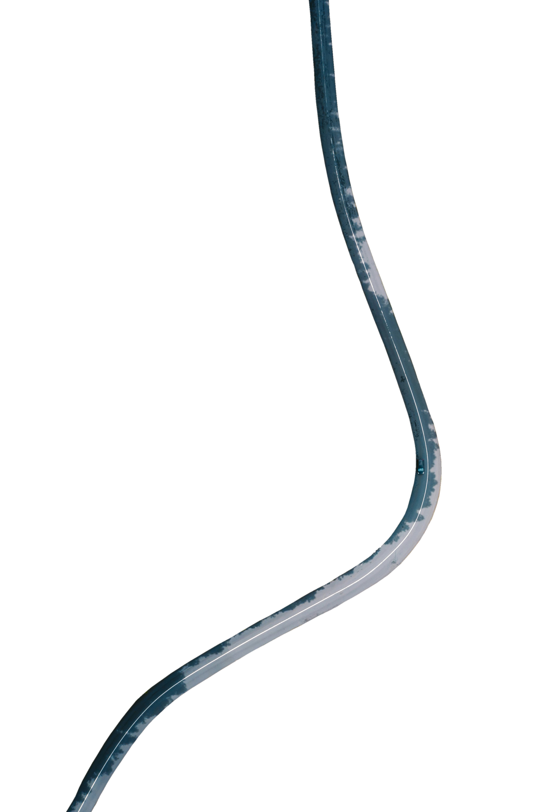

I still wonder
what happened-
what exactly
changed
for you?
Did you catch
me in the wrong
light? Did you
finally see
the distance
between
our differences?
If I had
hidden at all,
waited to
reveal myself–
would you
have found it
all small?
Or worse,
did it
have nothing
to do with me?
Did you really
lack the ability
to know
none of our
happiness
was what
you could handle?
